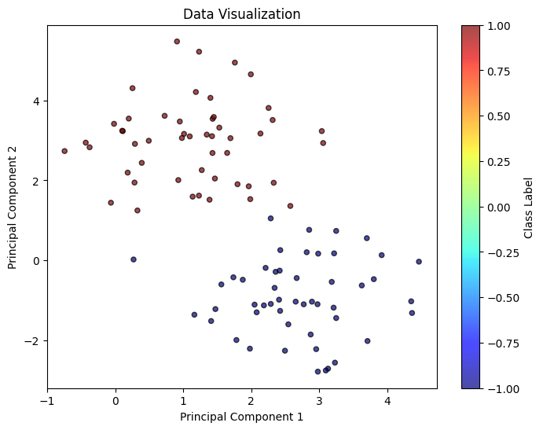
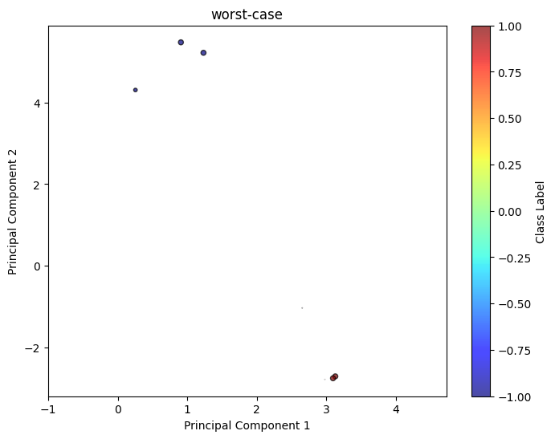
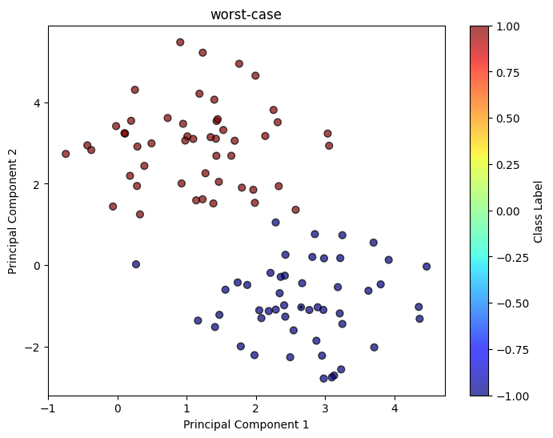

WDRO¶
[3]:
from dro.src.linear_model.chi2_dro import *
from dro.src.linear_model.wasserstein_dro import *
Classification Task¶
Load Data¶
[4]:
from dro.src.data.dataloader_regression import regression_basic
from dro.src.data.dataloader_classification import classification_basic
from dro.src.data.draw_utils import draw_classification
X, y = classification_basic(d = 2, num_samples = 100, radius = 3, visualize = False)
draw_classification(X, y, title = 'Raw Data')

Model Fit¶
Recall \(X\) being the feature and \(Y\) being the outcome, we allow both \(Y = \theta^{\top}X\) and \(Y = \theta^{\top}X + b\) by setting fit_intercept (default = True).
[5]:
clf_model1 = WassersteinDRO(input_dim = 2, model_type = 'logistic')
clf_model1.update({'eps': 0.1, 'kappa': 'inf'})
clf_model1.fit(X, y)
[5]:
{'theta': [-1.208003584870942, 1.2080035865776435], 'b': array(1.15966179)}
Worst-case Distribution and Visualization¶
For SVM / Logistic / LAD, we provide two different worst-case distribution computations, 1 stands for asymptotic approximation, 2 stands for the exact calculation while requiring solving n optimization problems.
[6]:
clf_model1.update({'eps': 0.1, 'kappa': 2})
worst_case_log = clf_model1.worst_distribution(X, y, 'asymp', 0.01)
draw_classification(X, y)
draw_classification(worst_case_log['sample_pts'][0][100:], worst_case_log['sample_pts'][1][100:], weight = worst_case_log['weight'][100:], title = 'worst-case', scale = 20)
[3.18639091e-12 4.21703119e-12 0.00000000e+00 3.25475514e-12
1.00000000e+00 0.00000000e+00 0.00000000e+00 4.60277753e-12
1.02526476e-11 1.10563554e-11 2.45641409e-12 0.00000000e+00
2.84238435e-12 0.00000000e+00 6.33801177e-12 3.93117405e-11
1.00000000e+00 0.00000000e+00 3.96421269e-12 3.46894581e-12
2.51412118e-12 0.00000000e+00 3.84107737e-10 4.56729223e-12
0.00000000e+00 3.00535880e-12 2.63407617e-12 0.00000000e+00
2.83507992e-12 3.62079608e-12 0.00000000e+00 0.00000000e+00
5.75420387e-12 0.00000000e+00 0.00000000e+00 0.00000000e+00
3.80735179e-12 1.12760333e-03 2.47686392e-12 1.97720814e-11
2.89162878e-12 3.93652762e-12 0.00000000e+00 0.00000000e+00
2.78382687e-12 6.97988361e-12 3.09788077e-12 3.53187641e-12
0.00000000e+00 4.17427214e-12 3.63795054e-12 0.00000000e+00
2.48290585e-12 8.56762972e-12 1.00000000e+00 3.48663558e-12
0.00000000e+00 2.57841558e-12 0.00000000e+00 0.00000000e+00
1.07041917e-11 3.13172453e-12 0.00000000e+00 6.70753770e-12
6.72286378e-12 4.98872396e-01 3.24733348e-12 0.00000000e+00
5.42021752e-12 8.07758296e-12 3.70138833e-12 2.47031955e-12
2.63881927e-12 2.97148331e-12 4.25286031e-12 0.00000000e+00
0.00000000e+00 9.63029906e-12 8.98373236e-12 0.00000000e+00
0.00000000e+00 5.91353527e-12 0.00000000e+00 2.69566043e-12
3.38503533e-12 3.76958630e-12 7.44475608e-12 1.00000000e+00
0.00000000e+00 6.83673811e-12 4.56997076e-12 0.00000000e+00
0.00000000e+00 5.94644898e-12 0.00000000e+00 3.11911971e-12
4.52019371e-12 0.00000000e+00 3.15452764e-12 2.99996905e-12] 0.003436426116838488 0.0


Robust Satisificng version of Wasserstein DRO¶
[8]:
from dro.src.linear_model.wasserstein_dro import *
clf_model_rs = WassersteinDROsatisficing(input_dim = 2, model_type = 'svm')
clf_model_rs.fit(X, y)
[8]:
{'theta': [-0.3365834154114553, 6.700882661679513], 'b': array(-7.23837706)}
[10]:
from dro.src.linear_model.wasserstein_dro import *
from dro.src.data.dataloader_classification import classification_basic
from dro.src.data.draw_utils import draw_classification
X, y = classification_basic(d = 2, num_samples = 100, radius = 3, visualize = False)
clf_model1 = WassersteinDRO(input_dim = 2, model_type = 'logistic')
clf_model1.fit_intercept = False
clf_model1.update({'eps': 1.5, 'p': 'inf', 'kappa': 10})
clf_model1.fit(X, y)
worst_case_log = clf_model1.worst_distribution(X, y, 'asymp', 1)
draw_classification(X, y)
draw_classification(worst_case_log['sample_pts'][0], worst_case_log['sample_pts'][1], weight = worst_case_log['weight'], title = 'worst-case')
[0. 0. 0. 0. 0. 0. 0. 0. 0. 0. 0. 0. 0. 0. 0. 0. 0. 0. 0. 0. 0. 0. 0. 0.
0. 0. 0. 0. 0. 0. 0. 0. 0. 0. 0. 0. 0. 0. 0. 0. 0. 0. 0. 0. 0. 0. 0. 0.
0. 0. 0. 0. 0. 0. 0. 0. 0. 0. 0. 0. 0. 0. 0. 0. 0. 0. 0. 0. 0. 0. 0. 0.
0. 0. 0. 0. 0. 0. 0. 0. 0. 0. 0. 0. 0. 0. 0. 0. 0. 0. 0. 0. 0. 0. 0. 0.
0. 0. 0. 0.] 0.09090909090909091 0.5

Regression Task¶
We can construct similar models for Wasserstein DRO regression models, including lad and ols loss.
[11]:
import numpy as np
from dro.src.linear_model.wasserstein_dro import *
from dro.src.data.dataloader_regression import regression_basic
feature_dim = 5
X, y = regression_basic(num_samples = 100, d = feature_dim, noise = 1)
reg_model = WassersteinDRO(input_dim = feature_dim, model_type = 'lad')
costM = np.identity(feature_dim)
costM[0][0] = 1
reg_model.update({'cost_matrix': costM, 'eps': 1, 'p':2, 'kappa': 0.001})
print(reg_model.fit(X, y))
reg_model.update({'cost_matrix': costM, 'eps': 1, 'p':2, 'kappa': 'inf'})
print(reg_model.fit(X, y))
reg_model.update({'cost_matrix': costM, 'eps': 1, 'p':1, 'kappa': 'inf'})
print(reg_model.fit(X, y))
{'theta': [60.7303464138377, 98.62687565803654, 64.38050744405149, 56.75157019658433, 35.64014248777235], 'b': array(-0.01686764)}
{'theta': [3.4813060836775584e-12, 4.996418793689881e-12, 2.3206491216924255e-12, 3.2116809664310047e-12, 1.6101042960928221e-12], 'b': array(5.90939031)}
{'theta': [57.46100670695884, 57.461006707312464, 57.46100670699399, 57.461006706573606, 34.680078746063145], 'b': array(5.37018113)}
[12]:
reg_model.update({'cost_matrix': costM, 'eps': 1, 'p':2, 'kappa': 'inf'})
worst_case_log = reg_model.worst_distribution(X, y, 'asymp', 0.01)
worst_case_log['sample_pts'][0][-1]
[12]:
array([ 0.97511973, -0.67716171, -0.01224677, -0.89725437, 0.07580456])